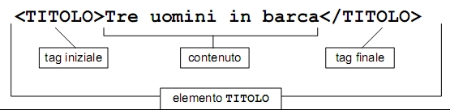
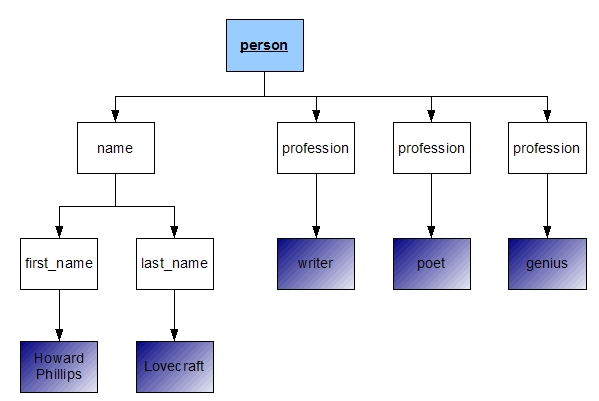
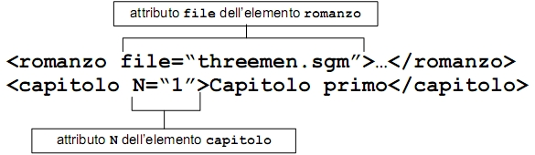

Torna alla pagina di Tecnologie Web
:: Tecnologie Web ::
Nozioni Fondamentali
Elementi, Tag, Attributi
Esempio di documento XML:
<autore>
E.A.Poe
</autore>
Queste tre righe di codice potrebbero essere l'intero contenuto di un file XML chiamato autore.xml o PoeRulez.xml.
NOTA: XML non impone nessuna restrizione per quanto riguarda il nome del file, in quanto il parser se ne frega del nome del file.
Analisi dell'esempio:
Il documento è formato da un singolo elemento il cui tipo è autore. L'elemento è delimitato da un tag iniziale <autore> e da un tag finale </autore>. Tutto ciò che si trova tra il tag iniziale e il tag finale è il contenuto dell'elemento. In questo caso quindi il contenuto dell'elemento autore è la stringa di testo: E.A.Poe.
<autore> e </autore> sono considerati testo di markup, mentre la stringa E.A.Poe e gli spazi che la circondano sono considerati dati di tipo carattere.
Riassumendo:
gli elementi sono le parti di documento dotate di un senso proprio e individuate da un tag iniziale, un contenuto ed un tag finale.

Sintassi dei tag
I tag XML quindi sono identici ai tag HTML:
- tag iniziali cominciano con <
- tag finali cominciano con </
entrambi sono seguiti dal nome dell'elemento e si concludono con il carattere >
Gli Elementi Vuoti sono quelli privi di contenuto. Sono rappresentati da tag che iniziano con < e terminano con i caratteri />.
Esempi:
<br/>
<hr/>
In XML e XHTML non è permesso utilizzare solo il tag iniziale (cosa invece concessa in HTML) senza specificare il tag finale. Quindi inserire in un documento <br> senza </br>, genera un errore in quanto il documento non è ben formato.
XML è Case Sensitive(a differenza di HTML), quindi distingue tra maiuscole e minuscole.
Esempio:
<person>
...
</PERSON>
genera un errore.
Alberi XML
I documenti XML sono assimilabili ad alberi gerarchici.
Esempio:
<person>
<name>
<first_name>Howard Phillips</first_name>
<last_name>Lovecraft</last_name>
</name>
<profession>writer</profession>
<profession>poet</profession>
<profession>genius</profession>
</person>
Padri e figli
Analisi dell'esempio:
Nell'esempio c'è un elemento person che contiene quattro elementi FIGLI: un elemento name e tre elementi profession. L'elemento name a sua volta contiene i due elementi figli first_name e last_name.
L'elemento person è quindi PADRE dei suoi quattro elementi figli(name e i tre profession) e l'elemento name è padre dei suoi due elementi figli(first_name a last_name).
L'elemento name e i tre elementi profession sono tra di loro FRATELLI, stessa cosa vale per first_name e last_name.
Note:
L'elemento root
L'elemento radice è presente in ogni documento XML ed è il primo elemento del documento, quindi è quell'elemento che non ha un padre. Nel nostro esempio è l'elemento person.
Per questo motivo abbiamo detto che un documento XML è come un albero.
Infatti:

Legenda:
azzurro: elemento root
bianco: elemento
blu sfumato: dati di tipo carattere
Attributi
Un attributo è una coppia nome-valore associata al tag iniziale di un elemento. Il nome viene separato dal valore tramite un =; i valori sono racchiusi tra virgolette singole ' o doppie " .
Esempio di prima riscritto con attributi:
<person>
<name first="Howard Phillips" last="Lovecraft"/>
<profession value="writer"/>
<profession value="poet"/>
<profession value="genius"/>
</person>

La scelta di utilizzare elementi figli o attributi dipende da cosa dobbiamo fare. Nel momento in cui effettuiamo la scelta però dobbiamo ricordare che gli attributi sono limitati, in quanto il loro valore è semplicemente una stringa di testo. Quindi una struttura ad elementi sarà sicuramente più flessibile ed estensibile.
Nomi XML
Le regole elencate qui sotto vanno rispettate per la definizione dei nomi degli elementi, degli attributi e di altre strutture.
I nomi XML possono contenere:
- qualsiasi carattere alfanumerico
- lettere inglesi dalla A alla Z, dalla a alla z, cifre da 0 a 9
- lettere non inglesi, numeri, ideogrammi
- i tre caratteri di punteggiatura: _ - .
non possono contenere:
- virgolette; apostrofi; $; <; >; %; ;
possono iniziare solo con:
Referenze a entità
Ci sono 5 referenze a entità:
NOTA:
Le prime due sono obbligatorie, mentre le altre tre sono opzionali.
I dati di tipo carattere all'interno di un elemento non possono contenere i caratteri sopra elencati senza che questi siano sottoposti ad escape perché altrimenti vengono interpretati in modo scorretto.
In pratica se nel testo serve inserire quei caratteri bisogna sottoporli ad escape tramite la referenza. Quando il parser legge il documento andrà a sostituire &alt; con il carattere <. Se non si utilizzasse la referenza a entità il parser interpreterebbe il < come inizio di un tag.
Sezioni CDATA
Una sezione CDATA corrisponde a un contenuto testuale puro senza alcuna sostituzione o espansione di testo.
Le sezioni CDATA entrano in gioco nel momento in cui nel nostro documento abbiamo delle porzioni di codice sorgente XML o HTML con molti caratteri < e & da dover quindi sostituire con le rispettive referenze a entità. Per evitare di dover scrivere decine di referenze a entità possiamo racchiudere ogni porzione di codice all'interno di una sezione CDATA (Character DATA).
Una sezione CDATA inizia con:
e finisce con:
L'utilità di ciò consiste nel fatto che tutto quello che si trova all'interno della sezione CDATA non viene interpretato dal parser, ma viene trattato come dato di tipo carattere, non come markup. Quindi i caratteri < e & posso inserirli senza dover ricorrere alla referenza a entità, questo perché non vengono interpretati come inizio di un tag o inizio di una referenza.
NOTA:
all'interno di una sezione CDATA non può MAI comparire la sequenza di caratteri ]]>, perché sarebbe ovviamente interpretata come fine della sezione CDATA.
Commenti
I commenti XML sono identici ai commenti HTML.
Iniziano con
terminano con
Esempio:
<!-- mmm ma che carino questo commento: Il sentimento più forte e più antico dell'animo umano è la paura, e la paura più grande è quella dell'ignoto -->
NOTE:
- possono apparire in qualsiasi punto all'interno dei dati di tipo carattere e prima o dopo l'elemento radice.
- Non possono apparire all'interno di un tag o all'interno di altri commenti.
Istruzioni di elaborazione
Le istruzioni di elaborazione sono un mezzo che serve per passare informazioni ad applicazioni che potrebbero leggere il documento.
Iniziano con
- <? e subito dopo va inserito un target che indica il nome dell'applicazione per la quale è stata inserita l'istruzione di elaborazione.
terminano con
Ovviamente all'interno dei due delimitatori vanno inserite istruzioni appropriate in base all'applicazione utilizzata.
Le istruzioni di elaborazione vengono considerate markup, non elementi. Quindi possono comparire in qualunque parte del documento, tranne che all'interno di un tag.
Esempio:
<?php
if( isset($_COOKIE["visite"]) )
$numero_visite=(int)$_COOKIE["visite"]+1;
else
$numero_visite=1;
// Il cookie verrà cancellato dal client dopo 3600 secondi = 1 ora
setcookie("visite", $numero_visite, time()+3600);
#setcookie("visite", $numero_visite, time()-3600);
?>
La dichiarazione XML
La dichiarazione XML non è obbligatoria, però dovrebbe sempre comparire all'inizio del documento XML. Ha l'aspetto di una istruzione di elaborazione con nome xml e attributi version, standalone e encoding.
Esempio dichiarazione:
<?xml version="1.0" encoding="UTF-8" standalone"yes"?>
<autore><name>
Lovecraft
</autore></name>
version
L'attributo version indica la versione utilizzata di XML. Può essere 1.0 o 1.1, ma solitamente è 1.0 in quanto XML è stato progettato per essere compatibile sia in avanti che indietro.
encoding
L'attributo encoding indica la codifica utilizzata per il testo. E' opzionale e se non viene dichiarato il parser assume che sia stato utilizzato il set di caratteri Unicode.
standalone
L'attributo standalone può avere valore yes o no ed è legato alla lettura del DTD da parte dell'applicazione.
Se ha valore no: l'applicazione deve leggere un DTD esterno per determinare i valori appropriati per le porzioni del documento.
Se ha valore yes: il documento non fa uso di DTD(come per gli esempi visti fino ad ora) oppure il DTD è stato inserito direttamente dentro il documento.
Anche questo attributo è opzionale e se omesso il parser assume come valore di default no.
Regole documento ben formato
Le regole che ogni documento XML deve rispettare per poter essere ben formato sono:
- a ogni tag iniziale deve corrispondere un tag finale
- gli elementi non possono sovrapporsi
- deve esistere esattamente un elemento radice
- i valori degli attributi devono essere specificati tra apici
- un elemento non può contenere due attributi che abbiano lo stesso nome
- i commenti e le istruzioni di elaborazione non possono apparire all'interno dei tag
- non deve apparire nessun carattere < & non sottoposto ad escape all'interno dei caratteri di un elemento o di un attributo(se non usiamo CDATA)
Come abbiamo già detto in precedenza il parser si limita a segnalare la presenza di errori, non corregge nessun problema. Quindi non avviene come in HTML che una eventuale dimenticanza viene corretta automaticamente(ad esempio la chiusura di un tag), questo viene fatto per evitare la generazione di bug dovuti alla copertura di altri bug.
Torna alla pagina di Tecnologie Web